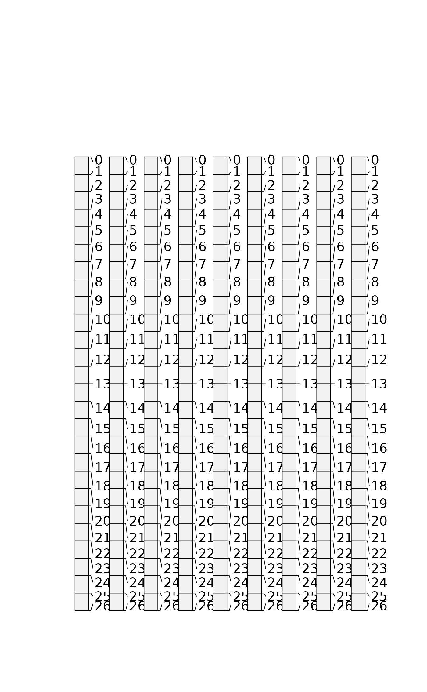

Soil profile data from Pinnacles National Monument, CA.
A data frame with 60 observations on the following 21 variables.
a numeric vector
a character vector
a numeric vector
a numeric vector
a character vector
a character vector
a character vector
a character vector
a numeric vector
a character vector
a character vector
a character vector
a character vector
a character vector
a numeric vector
a character vector
a numeric vector
a numeric vector
http://casoilresource.lawr.ucdavis.edu/
data(sp1)
# convert colors from Munsell to hex-encoded RGB
sp1$soil_color <- with(sp1, munsell2rgb(hue, value, chroma))
# promote to SoilProfileCollection
depths(sp1) <- id ~ top + bottom
site(sp1) <- ~ group
# re-sample each profile into 1 cm (thick) depth slices
# for the variables 'prop', 'name', 'soil_color'
# result is a SoilProfileCollection object
s <- dice(sp1, 0:25 ~ prop + name + soil_color)
#> dropping horizons with invalid depth logic, see `metadata(x)$removed.horizons`
#> filling gaps left by HzDepthLogicSubset
# plot, note slices
plot(s)

# aggregate all profiles along 1 cm depth slices,
# using data from column 'prop'
s1 <- slab(sp1, fm= ~ prop)
#> horizons with zero thickness have been omitted from results
# check median & IQR
library(lattice)
xyplot(top ~ p.q50 + p.q25 + p.q75,
data=s1, type='S', horizontal=TRUE, col=1, lty=c(1,2,2),
panel=panel.superpose, ylim=c(110,-5), asp=2)